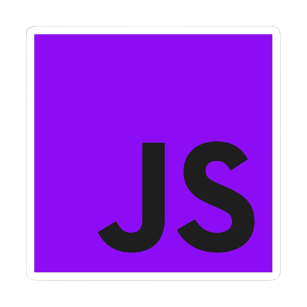

HTML (Linguagem de Marcação de HiperTexto) é o bloco de construção mais básico da web. Define o significado e a estrutura do conteúdo da web. Outras tecnologias além do HTML geralmente são usadas para descrever a aparência/apresentação (CSS) ou a funcionalidade/comportamento (JavaScript) de uma página da web.

CSS (Cascading Style Sheets ou Folhas de Estilo em Cascata) é uma linguagem de estilo (en-US) usada para descrever a apresentação de um documento escrito em HTML ou em XML (incluindo várias linguagens em XML como SVG, MathML ou XHTML). O CSS descreve como elementos são mostrados na tela, no papel, na fala ou em outras mídias.
JavaScript (às vezes abreviado para JS) é uma linguagem leve, interpretada e baseada em objetos com funções de primeira classe, mais conhecida como a linguagem de script para páginas Web, mas usada também em vários outros ambientes sem browser, tais como node.js, Apache CouchDB e Adobe Acrobat. O JavaScript é uma linguagem baseada em protótipos, multi-paradigma e dinâmica, suportando estilos de orientação a objetos, imperativos e declarativos (como por exemplo a programação funcional). Saiba mais sobre o JavaScript.
PHP (um inicialismo recursivo para PHP: Hypertext Preprocessor) é uma linguagem de script do lado do servidor de código aberto que pode ser utilizada junto com HTML para construir aplicações web e sites dinâmicos.